Non-dock Areas
Subata Skyway has the Shadow Fortress, the Maruzame Castle, Hamakala Temple, Raven Island, Wai no Shrine, Vortex of Disruption, Verdant Dock, and Ashen Docks. Verdant Dock and Ashen Docks have their own pages, but they do not have stagecoaches. Hamakala Temple is home to one of the more challenging fights which we will talk about more on this page. Maruzame Castle is also of note. It is a very pretty area with some potentially useful drops. Note it will not be available until the end of Mooshu.
Zeke Quest Info: Raven Island Knife
The knife is on the highest level of ice pools next to the ice pool on the right.
Hamakala Temple
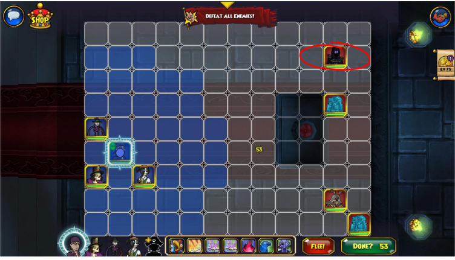Hamakala Temple hosts a challenging fight. The spectre enemy there will continue summoning more enemies until you kill him, so kill him ASAP.
Maruzame Castle
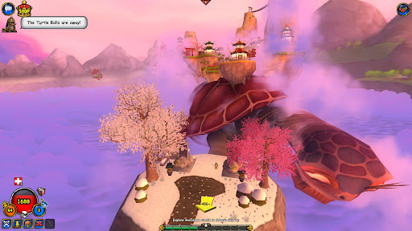Maruzame Castle has a large amount of notable items. I will go over them below.
Earth Guardian Drops
The following drops come from the Earth Guardian in the Earth Temple on Maruzame Castle. His droprates don't seem to be that bad, so expect a quicker farm if you get lucky.
Earth Guardian's Helm
 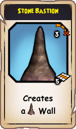
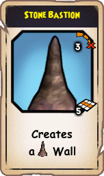

The Earth Guardian's Helm gives 4 strength, 11 armor, and 4 weapon power. What really stands out about it is the power it gives, Stone Bastion, which creates a 5 block wall. It has 3 range and can be used without line of sight.
Earth Guardian's Mace
 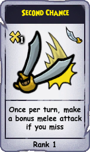
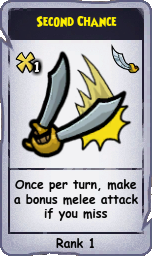

The Earth Guardian's Mace has 158 base weapon damage and is a smashy type weapon. It also gives 6 armor. What really makes it special is the epic it gives, Second Chance, which lets you attack again if you miss. This is viable on buccaneer but could be usable on swashbuckler.
Metal Guardian Drops
The following drops come from the Metal Guardian in the Metal Temple on Maruzame Castle. Warning: The droprate seems to be very low, so you can expect to farm for upwards of 20-40 hours. The gear is not at all necessary to have and will more than likely be replaced at max level, so farm this at your own discretion. Metal Guardian is decently hard, especially if you are a ranged class like Witchdoctor or Musketeer. Some of your companions may die due to being forced to activate statues. It is easier if you can find others to help you.
Metal Guardian's Helm
 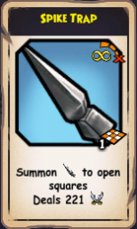
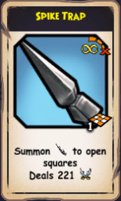

The Metal Guardian's Helm gives 4 will, 12 armor, and a power, spike trap. The important part of this item is the spike trap, which lets you put 5 spike traps in a pattern next to you that each deal 1x your physical damage stat. This could be good in niche situations for musketeer to trap the area and stall enemy approach. It also looks good as a stitch 😃. It will require Heavy Armor rank 1 to use though. This will require practice points to get for swashbucklers.
Metal Guardian's Armor

 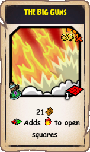
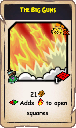

Metal Guardian's Armor provides 5 strength, 36 armor, and a big guns power. The shining star of this piece is The Big Guns, a power that deals 1.5x your mojo as physical damage in a 3 by 3 box with infinite range and no line of sight required. It also adds fire traps to open squares that deal good damage based off mojo. This is viable on any class that can use mojo, which means Privateer, Witchdoctor, and Musketeer. This looks good for a stitch maybe 😃. It will require Heavy Armor rank 1 to use though. This will require practice points to get for swashbucklers.
Metal Guardian's Boots

 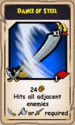
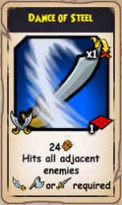

Metal Guardian's Boots give 5 agility and 12 armor. It also provides a power, Dance of Steel, which is a melee power that deals 1x your physical damage stat to everyone around you in a 1 block radius. It can be usable on swashbuckler and maybe possibly buccaneer. It can complete a stitch too 😃. It will require Heavy Armor rank 1 to use though. This will require practice points to get for swashbucklers.
Metal Guardian's Blade
 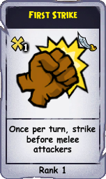
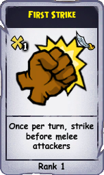

The Metal Guardian's blade has a weapon damage value of 176. It is a melee smash/slashy weapon that looks fantastic as a stitch. It is particularly useful for buccaneers. It gives First Strike, an epic which lets you attack first before an opponent if they are melee. It will require big choppy weapons to equip, which may require swashbucklers to use practice points.
Wood Guardian's Blossom


The Wood Guardian's Blossom comes from the Wood Guardian in the Wood Temple in Maruzame Castle. It provides 5 armor and 75 max health. It also gives a power, Druid's Chant, which summons a wood guardian minion to a square. It has 3 range and is not hindered by line of sight. This can be good on basically any class due to the power being a minion summon.
Fire Guardian's Medallion
 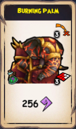
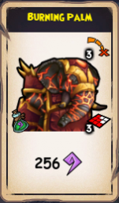

The Fire Guardian's Medallion comes from the Fire Guardian in the Fire Temple in Maruzame. The Fire Guardian's Medallion provides 4 weapon power and 45 max health. It provides the ability, Burning Palm, which deals a major mojo burst of damage in a cone like Bonnie Anne's ability. This is good on mojo classes like Privateer, Witchdoctor, and sometimes Musketeer.
Water Guardian Drops
The following drops come from the Water Guardian in the Water Temple on Maruzame Castle. I am not sure of the droprates, but it seems like you can expect to spend about a day farming if you choose to. Once again, this gear is not very crucial to have.
Water Guardian's Medallion
 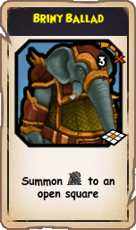
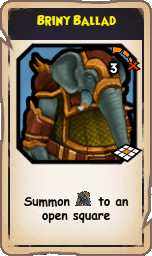

The Water Guardian's Medallion provides 4 weapon power and 6 accuracy. It provides the ability, Briny Ballad, which summons a water oni minion at a chosen square. The power has 3 range and is not hindered by line of sight. Honestly, the minion isn't that strong though. This is good on basically any class.
Water Guardian's Staff
 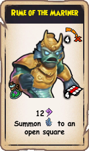
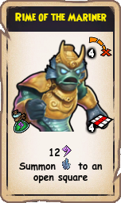

The Water Guardian's Staff has 158 weapon power and is a smashy type weapon. Do not be fooled by its name as a staff. It gains power from strength. It comes with a power, Rime of the Mariner, which deals damage to 4 boxes in a line emanating from your pirate. It leaves ice in empty squares. Unfortunately, this weapon is not will-based, so even though the power could be decent, it is mostly useful on buccaneers who will likely never use the power. It could be ok on any pirate using mojo in very niche situations due to the power, but it is highly unlikely.